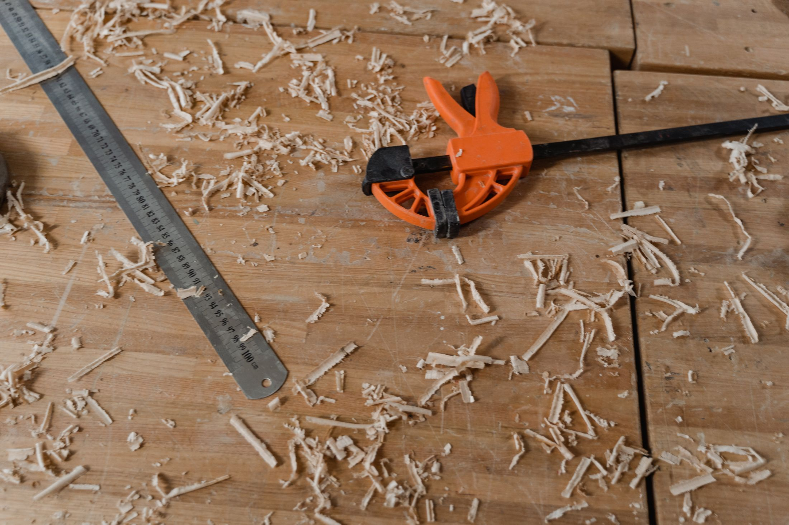

ABOUT — DESIGN SAMPLE
暮らしの間を、織りなす。

素材を知る。
過ごし方を想う。
畳・障子・壁・床。ひとつひとつの素材を、日々の過ごし方とともに考える。ayamaは、その姿勢を表現する架空の内装デザインブランドです。
このページは、相談から素材選び、空間づくりまでの案内を想定したサンプルです。
ABOUT — DESIGN SAMPLE

畳・障子・壁・床。ひとつひとつの素材を、日々の過ごし方とともに考える。ayamaは、その姿勢を表現する架空の内装デザインブランドです。
このページは、相談から素材選び、空間づくりまでの案内を想定したサンプルです。